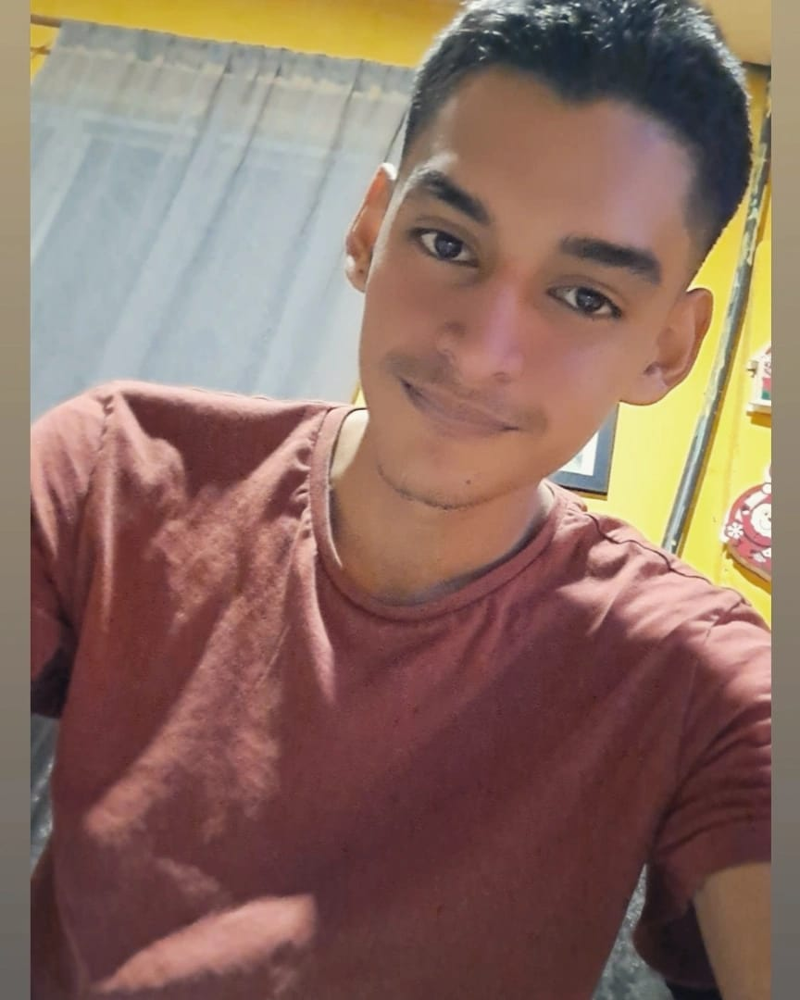
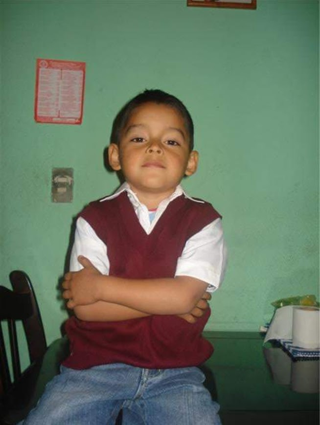
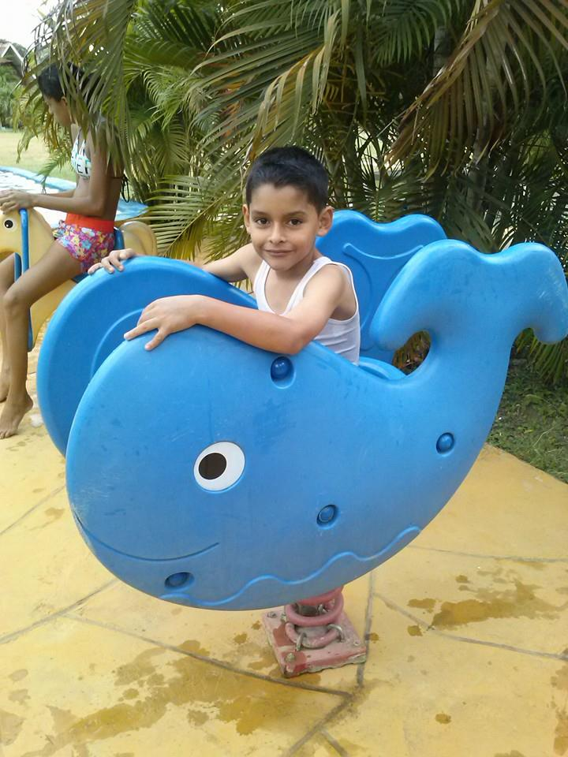
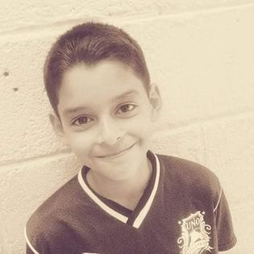

Me propongo hacer un buen estudiante este año 2025, seguir haciendo deporte y gestionar mi tiempo eficientemente. Pasar más tiempo de calidad con amigos y familiares. Visitar un nuevo país o ciudad. Aprender sobre diferentes culturas y tradiciones mientras viajas.


